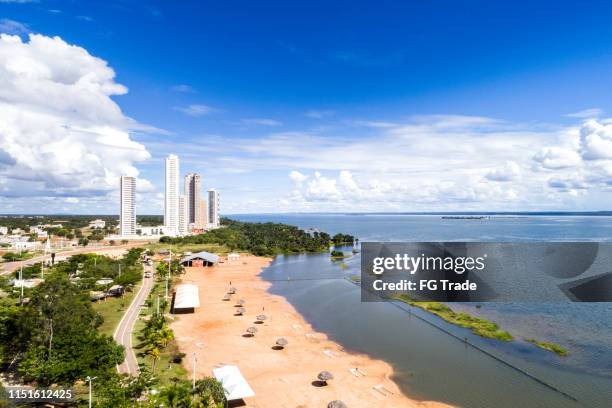

Tocantins é o estado mais jovem do Brasil, criado em 1988, e está localizado na região Norte. Sua capital, Palmas, foi planejada e inaugurada no mesmo ano da criação do estado. Tocantins é conhecido por sua rica biodiversidade, com destaque para o Parque Nacional do Jalapão, famoso por suas dunas, fervedouros e cachoeiras. A economia do estado é baseada na agropecuária, especialmente na produção de arroz, abacaxi e leite, além de atividades pesqueiras e extrativistas. O estado também possui uma cultura rica, com influências indígenas e nordestinas, refletidas em suas festas tradicionais e culinária típica.
 Voltar